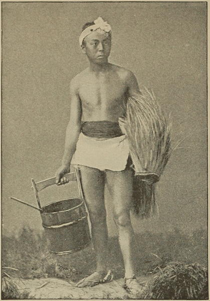

“A farmer in his working suit”
Japan (1897)
Nara is so near to Osaka that among them a sprinkling of men, mostly no doubt engaged in commerce, wore foreign dress, but the majority of the people were in their native clothes, and as I sat and painted by the road-side I could study the variations of Japanese costume—from that of the old peasant with his white or blue leggings, straw shoes, big hat, and robe tucked into his girdle, his head shaved down the middle, and the back hair turned up in a queue in the ancient mode, to that of the gay young musumé with her rich silk kimono, gorgeous scarlet petticoat, broad obi, and black-lacquered sandals on her pigeon-toed, white-socked feet.
Notes in Japan (1896)
The women dress very much like the men, with a loose, flowing robe, confined at the waist by a scarf. At the back they wear a bundle of cloth or silk, the most costly article of their whole attire. Every woman, whether of low or high degree, poor or wealthy, always turns round on passing another woman, and fixes her eyes on this singular appendage, a scrutiny which enables her to judge of the wearer’s station and wealth.
A Lady’s Visit to Manilla and Japan (1863)
When a foreigner beholds for the first time a Japanese lady seated on her heels, as is the custom, he fancies that she has the small of her back supported by an enormous cushion. But when he subsequently sees this lady walking down the street, attended by her maid, he perceives that what appeared to him a sofa-pillow is really a regular part of her costume. It is a heavy silken sash, extremely long and often very elegant, which keeps the robe itself in place. This obi, as it is called, is the most precious article of a Japanese lady’s wardrobe. Its usual length is fourteen feet, and when its material is silk or gold brocade it will be seen that it has some value. These sashes exhibit, of course, a great variety of color, and one can scarcely find a prettier sight than that of several well-dressed Japanese ladies, grouped together in the vivid sunlight. They look as radiant and attractive as a bouquet of flowers.
Japan (1897)
As regards the old Japanese male suit, its cut only differs but little from that of the female dress. The kimono is worn shorter, it barely comes down to the man’s heels, and travellers and workmen like to shorten it even more over the knees in order to walk or work more comfortably. To the full dress of the man belongs also the hakama, a kind of trousers, which are worn above the gown and are so large that they have the appearance of a woman’s petticoat.
The colour of the man’s kimono is as a rule a plain and quiet one, and the women of all classes also now wear mostly plain neutral-tinted kimonos while they often prefer a brighter and many coloured flowered silk stuff for the big sash on the back. In the place of the bright and luxurious obi of nearly half a yard breadth, the men use a belt, scarcely a hand in breadth, which they wind sundry times around the hips, and which they use to carry their pipe, tobacco-pouch, and fan in. The sleeves, nearly half a yard wide, are sewn partly together at the opening, and in this manner form a kind of pouch-like pocket, in which the Japanese can hide and carry about with them various light articles, while heavier things are carried in the breast fold formed by the kimono and the belt. The sleeve pockets they also use to carry a little pocket case containing a provision of “hana gami,” small square pieces of soft paper, which in Japan fill the place of our pocket-handkerchiefs and are thrown away after use.
Low people, as for instance workmen, sailors, peasants and porters, go mostly naked, only wearing a diminutive loin cloth. With peasants and boatmen one often meets the “mino,” a waterproof-cloak made of two-feet-long stalks of rice-straw put together in thatch fashion.
Japan As I Saw It (1912)
All the officials wore the long flowing Japanese dress, which has some resemblance to a monk’s garment. It is confined at the waist by a long band wound round the body, to which is suspended a case containing a pipe, tobacco-pouch, a singular kind of inkhorn, and the brush of which they make use in writing. Over this dress is worn a transparent, dark species of coat, upon the back and arms of which is a small, round, white mark, worn alike by all in whatever service they may be engaged, and denoting the person to whom they belong, or the employment which they follow.
On high days and holidays, all the officials wear a similar dress, of a light fawn or dove tint. Two swords are always stuck in their girdle as they walk about, but on sitting down they generally remove the longest, and place it at their side. With the smaller one they never part, as it is with this, or with the knife which is fastened on the scabbard of the weapon, that the “hara kari” is committed.
A Lady’s Visit to Manilla and Japan (1863)
Much of the healthful effect of the daily bath is neutralized by the absence of under-clothing that can be often changed, as white under-garments may not be worn by any one beneath the rank of a Buñio.
Across America and Asia (1870)
In one of these tea-houses [in Nagasaki] of which the Russian officers of the squadron took almost exclusive possession, several mornings were passed in photographing Japanese of both sexes decked out in full costume, dancing and singing girls, with now and then some curious beauty from the neighbourhood; also musical instruments, swords, gongs, teapots, &c.—in fact, everything that was characteristic of the country and scene, or could help to fill up the picture. Group after group was taken of figures sitting, dancing, attitudinizing, eating, drinking, or smoking, and glass after glass spoiled, owing to the laughing and frolicsome behaviour of the highly amused moosoome.* After several well-portrayed scenes were taken, though not without great trouble in keeping the subjects in a state of repose for a few seconds, the hilarity of the whole party was increased by the changing of costume. Moosoome came out in uniform, with pantaloons and swords girded on; officers in Keremon and Obee,† their hair dressed out à la Japonaise with colored crape, and flowers. Each played the part of his or her assumed character, the moosoome strutting up and down, and the men prostrating themselves like the Japanese women, till the scene became so ridiculous that the most serious could not hold out. The people around roared with laughter; tears were running down the cheeks of a fat old bonze, as his ponderous sides shook, while two caustic-looking, two-sworded gentlemen, putting their noses in at the garden gate, shook their heads, and, no doubt, vowed to themselves that the barbarians were spoiling the people.
*Moosoome—Anglicé, girls.
†Keremon. Japanese gown; Obee, a silk scarf worn round the waist, and tied into a huge knot.
Japan, the Amoor, and the Pacific (1861)
◀ Meeting and partingFootwear ▶